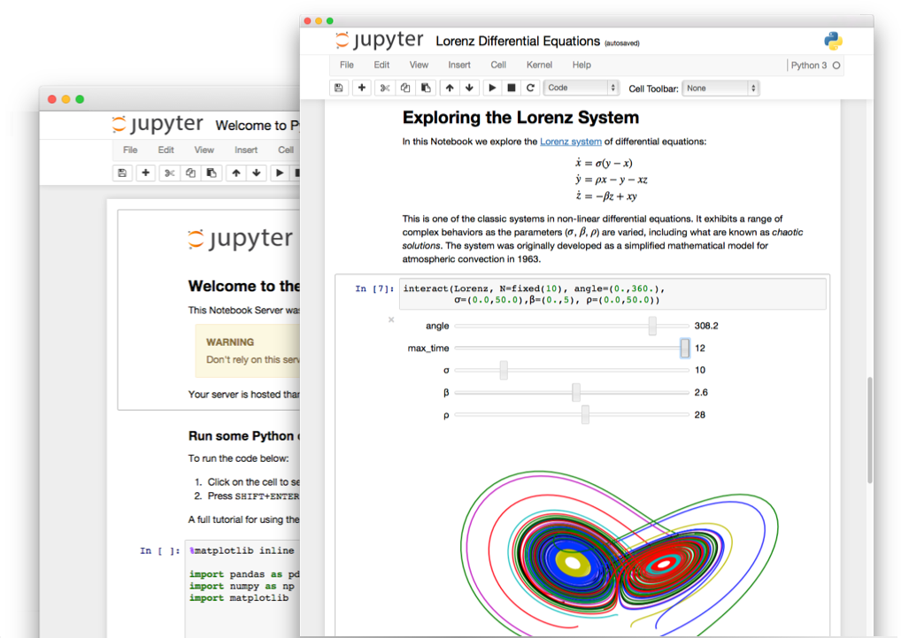

交互式编辑器 - Jupyter notebook
- 为什么使用Jupyter Notebook？
- 基础操作
- 拓展应用

为什么使用Jupyter Notebook？
一个完整的Jupyter Notebook数据报告演示
交互式计算
- 软件开发工程：工程/目标明确，按部就班
- 需求分析，设计架构，开发模块，测试
- 探索/研究/学习：艺术/目标不明确，摸索前进
- 目的是抽象的洞察目标，而不是机械的完成任务
- 通过执行代码来理解问题
- 迭代式地改进代码来改进解决方法
实时运行的代码、叙事性的文本和可视化被整合在一起，方便使用代码和数据来完成文档、讲述故事
科学计算领域通过 Matlab、IDL 和Mathematica等程序语言首先熟悉了人机交互式的计算方式，Jupyter则是最新的集大成者
交互式编程工具
- 操作系统自带Shell
- Python自带IDLE
- IPython，增强版Shell
- Jupyter Notebook：网页版交互式代码笔记工具
- JupyterLab：下一代Jupyter Notebook，模块化和可扩展接口，基于网页的IDE,测试版
- nteract 客户端：桌面版Jupyter Notebook，基于Electron，测试版
- JupyterHub：服务器端多人权限Jupyter Notebook系统
- 其他编辑器和IDE对交互式编程的支持：如VScode/PyCharm
Jupyter Notebook
Jupyter项目是一个交互式的Python生态系统，最常用的是Jupyter Notebook
- Jupyter Notebook，原名IPython Notbook，是IPython的加强网页版
- 名字源自Julia、Python 和 R（数据科学的三种开源语言）
- 是一款程序员和科学工作者的编程/文档/笔记/展示软件
- .ipynb文件格式是用于计算型叙述的JSON文档格式的正式规范
交互式的编程环境，友好的界面，便于分享的文档格式，对排版语法、绘图、数学公式的支持，使她成为最流行的Python科学计算工具
- 使用场景：编程(探索、学习、数据方向)，文档，笔记，教学，演讲，数据分析报告等等
- Jupyter Notebook ≈ Python + MATLAB + Word + Excel + PowerPoint
打开方式
Jupyter Notebook是一个采用C/S架构的网站，通过Tornado建立WEB服务器端，使用浏览器作为客户端
1：命令行进入对应目录
用Windows控制台（windows键+R，输入cmd回车）或Anaconda Prompt进入想作为开发目录的磁盘盘符，进入文件夹，查看目录
e:
cd python
dir
2：输入命令
会自动弹出浏览器窗口打开notebook
jupyter notebook
# 或 jupyter-notebook
- 本地notebook的默认URL为：http://localhost:8888
- 如果想换其他浏览器打开，只输入本地域名端口回车打不开，会提示输入密码，需要拷贝命令窗口的完整URL到新浏览器才可以打开（带token参数的url,注意参数的空格去掉）
- 注意，不要直接打开notebook，想让notebook打开指定目录，只要进入此目录后执行命令即可
3：使用完成，关闭notebook服务
快捷键CTRL+C，（Linux/MACOS，5秒内输入y关闭服务，否则服务不会关闭需要再按 CTRL+C）
注意：
- 只关闭网页并没有关闭notebook服务，后台仍在运行
- 如果虚拟机或宿主机电脑开启某些WEB相关服务(如网络代理或去广告服务)，可能会导致Jupyter Notebook无法运行**
界面操作
notebook分为目录界面和内容界面
1：目录界面操作
- 新建notebook文档
- notebook的文档格式是
.ipynb，一种类JSON的文本格式
- notebook的文档格式是
- 启动终端（如果服务端是Windows不支持）
- 导入导出文档（直接在系统目录内复制粘贴后点击右上角按钮刷新页面）
- Running-Shutdown，关闭文档
2：内容界面操作

- 标题栏：点击标题（如Untitled）修改文档名
- 菜单栏
- 导航-File-Download as，另存为其他格式
- 工具栏，见下
- 编辑区，见下
cell操作（重要）
cell：一对In Out会话被视作一个代码单元，称为cell
Jupyter支持两种模式：
- 编辑模式（Enter）
- 命令模式下
回车Enter或鼠标双击cell进入编辑模式 - 可以操作cell内文本或代码，剪切／复制／粘贴移动等操作
- 命令模式下
- 命令模式（Esc）
- 按
Esc退出编辑，进入命令模式 - 可以操作cell单元本身进行剪切／复制／粘贴／移动等操作
- 好的编程习惯是：编辑内容完成后随手按ESC进入命令模式
- 按
工具栏操作cell

cell模式分类
- Code 代码
- Markdown 解释，文档
- Raw NBConvert 内容东西原样显示，文本不解析
快捷键操作cell
- 两种模式都可使用的快捷键
Shift+Enter，执行本单元代码，并跳转到下一单元Ctrl+Enter，执行本单元代码，留在本单元
cell行号前的 * ，表示代码正在运行
- 命令模式：按ESC进入
Y，cell切换到Code模式M，cell切换到Markdown模式A，在当前cell的上面添加cellB，在当前cell的下面添加cell双击D，删除当前cellZ，回退Ctrl+Shift+减号，分割cell，在光标处Shift+M，合并cell，向下合并L，为当前cell加上行号
- 编辑模式：按Enter进入
- 多光标操作：
Ctrl键点击鼠标（Mac:CMD+点击鼠标） - 回退：
Ctrl+Z（Mac:CMD+Z） - 重做：
Ctrl+Y（Mac:CMD+Y) - 补全代码：变量、方法后跟
Tab键 - 为一行或多行代码添加/取消注释：
Ctrl+/（Mac:CMD+/） - 屏蔽自动输出信息：可在最后一条语句之后加一个分号
- 多光标操作：
IPython魔术命令
以! %等特殊符号开头的命令，叫魔术(magic)命令，用于加强IPython shell功能
不能在除IPython以外的Python环境执行
!，执行shell命令：在命令前面加!，如!conda info- 以
%开头的为行命令，只对命令所在的行有效 %%开头的为单元命令，单元命令必须出现在单元第一行，对整个单元都有效
注意：魔术命令后面不能带Python注释，否则报错
应用：计算代码执行时间
注意：时间单位：秒s，毫秒ms，微秒µs，纳秒ns，每个单位相差1000倍
%time一次执行一条代码，报告时间%timeit一条代码自动执行多次，算平均时间%%time一次执行cell中全部代码，报告时间%%timeitcell中全部代码自动执行多次，算平均时间
本cell内的%%魔术命令前不能有其他代码
# 输出单行执行时间
%time abc = 123 * 99999999 # #纳秒级无法区分，必须用%timeit
%timeit abc = 123 * 99999999
# 输出多行执行时间
%%time
abc = 123 * 99999999
#...多行构成的代码单元
%%timeit
abc = 123 * 99999999
#...多行构成的代码单元
应用：载入Python代码
导入外部代码到notebook的cell中
%load test.py
可以将下列Python数据分析常用库写入py文件，使用时直接导入notebook
import numpy as np
import matplotlib.pyplot as plt
import pandas as pd
# plt.style.use('seaborn') # 更换图像样式
plt.rcParams['font.family'] = ['Arial Unicode MS', 'Microsoft Yahei', 'SimHei', 'sans-serif'] # 解决中文乱码
# plt.rcParams['axes.unicode_minus'] = False # 如果字体为SimHei黑体,负号乱码,解决
# MAC电脑解决图片模糊魔术命令
# %config InlineBackend.figure_format = 'retina'
运行Python文件：相当于 load命令 + Shift+Enter
%run test.py
应用：重新加载模块依赖
Python载入模块执行时，所有模块变量、函数、引用会保存在本模块的命名空间，再次载入会直接引用此命名空间
- 传统开发模式每次执行会重新载入运行所有相关库代码
- notebook(IPython)交互式开发模式不会执行所有代码，造成问题：
- notebook引用的脚本自己引用的模块内容如果发生改变，notebook再次执行不会更新间接引用模块内容
1：py模块1
# module/module1.py
def m1():
print('module1.py载入')
2：py模块2调用py模块1
# module/module2.py
import module.module1 as mo
def m2():
print('module2.py载入bb')
3：Jupyter执行魔术命令，执行py模块2
%run module/module2.py
m2()
mo.m1()
4.修改module1.py数值后再次执行，输出不变
解决方法：
- 方法1：使用IPython魔术命令
- 载入IPython模块
- 每次运行都重载所有关联模块
需要重启内核后运行
%reload_ext autoreload
%autoreload 2
%run module2.py
m2()
mo.m1()
- 方法2：方式1不起作用时，每次需要重新加载间接关联模块时：
- 重启Jupyter Notebook内核（notebook导航 - Kernel - Restart）
另外：如果使用import方式载入，直接载入模块修改都不会变，解决方法同上
# 一种载入模块方式
from module.module2 import *
m2()
mo.m1()
# 或者另一种载入模块方式
import module.module2
module.module2.m2()
module.module2.mo.m1()
应用：执行HTML/CSS/JavaScript
在cell中以Markdown模式执行HTML/CSS/JS
- （HTML支持，CSS只支持行内样式，JS不支持）
<a href="###" class="class1" style="color:#ff0;">aaaaaaaaaaa</a>
<a href="###" id="id1">bbbbbbbbbbbbbbbb</a>
<style>
.class1{background:#0f0;}
</style>
<script>
var ida = document.getElementById('id1');
ida.style.background = '#f00';
</script>
IPython专用魔术命令 %%HTML 载入HTML/CSS/JS
- 在cell中以原生HTML方式执行，HTML/CSS/JS全支持
- 优点：书写简单，推荐
- 缺点：非IPython环境不支持
%%HTML
<a href="###" class="class3" style="color:#ff0;">aaaaaaaaaaa</a>
<a href="###" id="id3">bbbbbbbbbbbbbbbb</a>
<style>
.class3{background:#0f0;}
</style>
<script>
var ida3 = document.getElementById('id3');
ida3.style.background = '#f00';
</script>
应用：Jupyter Notebook隐藏代码
用于ipynb文件和HTML文件，默认只显示解释和执行结果，点击按钮隐藏/显示代码，输出数据分析报告时用
%%HTML
<script>
code_show=true;
function code_toggle() {
if (code_show){
$('div.input').hide();
} else {
$('div.input').show();
}
code_show = !code_show
}
$( document ).ready(code_toggle);
</script>
<form action="javascript:code_toggle()"><input type="submit" value="点击按钮显示/隐藏文档代码！"></form>
应用：Jupyter Notebook远程访问
Jupyter Notebook默认只能在本地访问，可以把它配置在高性能服务器上，本地电脑直接通过浏览器远程访问Jupyter执行大规模高性能计算
1. 生成sha1加密密码：
from IPython.lib import passwd
passwd()
# Enter password: # 这里输入你的密码回车
# Verify password: # 再次输入密码回车
# 将生成的sha1字符串保存好（命令窗口右键 - 标记 - 选中后回车保存）
2. 编辑配置文件：在自定义目录新建一个py文件，例如E:/pyserver/jupyter/jupyter_server.py,里面添加配置：
#用于Jupyter远程访问的配置
c.NotebookApp.ip = '*' #所有ip都能访问
c.NotebookApp.open_browser = False #执行是是否打开浏览器显示页面，不打开
c.NotebookApp.port = 9999 #自己设一个端口号，可改，不冲突就行
c.NotebookApp.password = u'sha1:61d200d041e4:3f4b884348c940c569e1211d30e4affb701def15' #填入第一步生成sha1密码字符串，这里是`nihao`生成的，改为自己的
c.NotebookApp.notebook_dir = u'E:/pyserver' #选填，远程打开Jupyter后默认的目录
3. 调用配置文件打开Jupyter：
jupyter notebook --config E:/pyserver/jupyter/jupyter_server.py
4 浏览器访问URL地址，打开Jupyter Notebook：
URL地址一般为：http://你的IP地址:设定端口号
- 获取本机IP地址：
- Windows，命令行输入
ipconfig - Linux/MAC，命令行输入
ifconfig
- Windows，命令行输入
- 如多人多项目大规模使用远程服务，建议使用用官方
JupyterHUB工具
应用：Jupyter Notebook生成网页版PPT
- 菜单栏 - View - Cell Toolbar - SlideShow 注：默认正常状态是None
- Cell右上角会出现幻灯选项，依次为：
- Slide：单个view，左右滑动切换
- Sub-Slide：Cell的sub-cell，上下滑动切换
- Fragment：Slide或Sub-Slide的属性，可以按次序动态展示，单击一次出现一条
- Skip：跳过，注释非演示代码，不显示在幻灯中
- Notes：在页面按s就可以跳出来的注释（目前无效）
设置好幻灯显示Cell后：
生成HTML幻灯演示文稿文件：
- aaa为ipynb文件名，bbb为生成HTML文件名
- 生成后可以直接双击打开，按
F11全屏，点击空格键或鼠标点击右下角控制台播放 - 文件名不能含有空格
- 常见快捷键
- f，全屏，ESC关闭全屏
- b，熄灯
- o，显示幻灯页面列表
jupyter-nbconvert --to slides aaa.ipynb --reveal-prefix 'https://cdn.bootcss.com/reveal.js/3.5.0' --output bbb
或者也可以直接在线开启幻灯服务
jupyter-nbconvert aaa.ipynb --to slides --post serve
注意：
- 直接在线开启服务会先生成HTML文件，再开启HTTP服务打开文件，但自动生成的文件幻灯资源（在线JS幻灯库）会载入失败，导致双击打开的文件无法播放幻灯
- 离线生成的HTML文件，双击打开可以正常播放
- 用 Files - Download as - Reveal.js slide 另存的网页文件也是幻灯文件，只是由于载入幻灯JS库失败不能播放（新版Jupyter可以播放但有其他BUG）